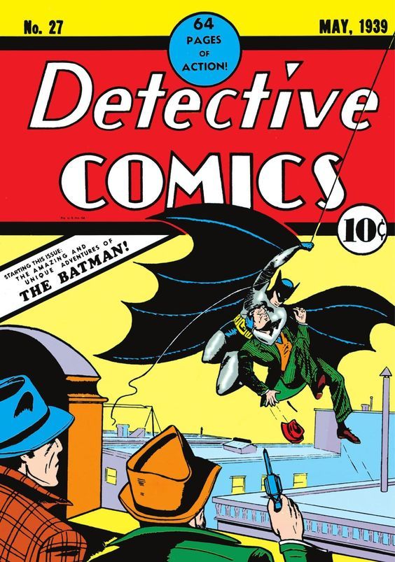
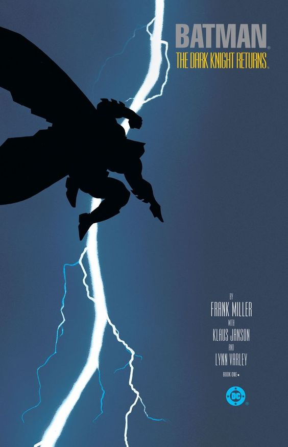
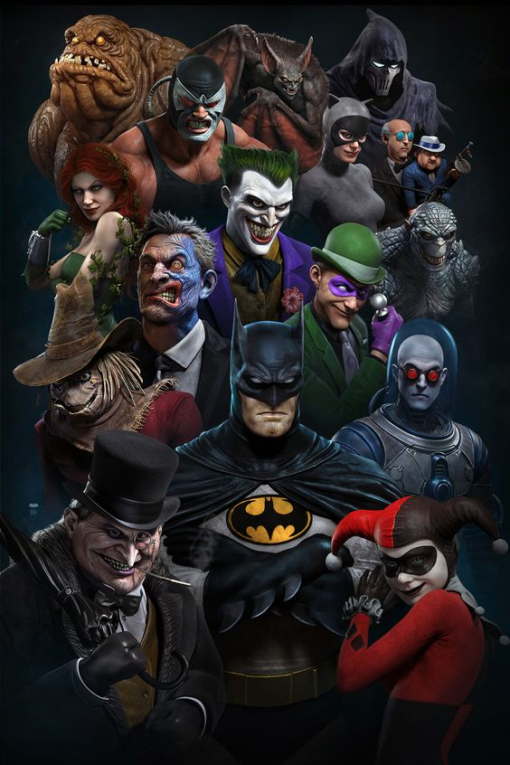

Batman, tambien conocido como el caballero oscuro, el encapotado y el mejor detective del mundo, es un personaje ficticio creado por Bill Finger y Bob Kane. Cuya primera aparicion se remonta al año 1939. Su debut en las historietas se produjo en el numero 27 de la saga "Detective Comics", mas concretamente en la historia "El Caso del Sindicato Quimico".

Con el paso del tiempo la apariencia como el estilo de personalidad fue cambiando segun los autores que se encargaron de dar vida al personaje, ya sea de forma televisiba como de forma ilustrada. Todos recuerdan el "batswing" de Adam West, cuando el caballero oscuro era no mas que un heroe humoristico, que no destacaba mas que por carecer de superpoderes y por su disfraz.
No fue hasta el año 1986 donde el escritor Frank Miller cambio el tono de la historia y la personalidad de Batman, a una mas agresiva, fria y oscura. Personalidad que fue apoyada por todo el mundo de las historietas y de la television, causando asi que sea lo que culmine destacando al mejor detective del mundo. Dicho cambio fue mostrado en el comic "Batman: El regreso del caballero oscuro", una de las impresiones mas valoradas y destacadas del superheroe hasta el dia de la fecha. Y en la cual se basarian muchisimas personificaciones, ya sea tanto en los comics, como en peliculas y videojuegos del personaje.

A la actualidad, el desarrollo del personaje continua el rumbo marcado por Frank Miller, aunque cada nuevo artista incorpora nuevos detalles al personaje. El cual es considerado el personaje con la mejor galeria de villanos de todo el universo del comic.
